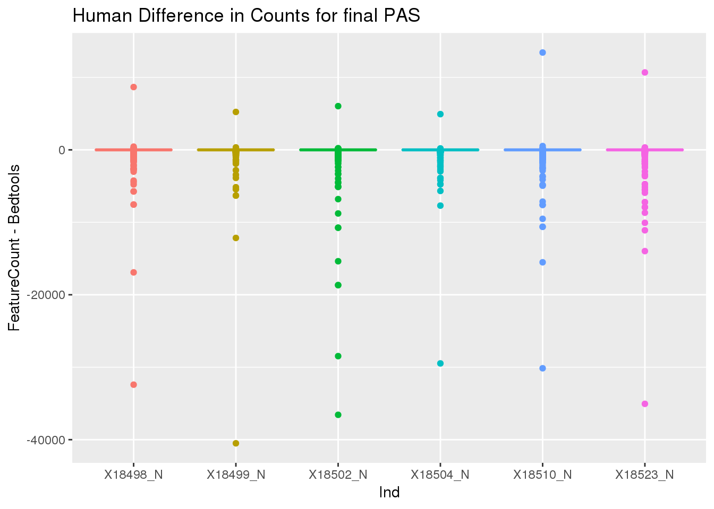
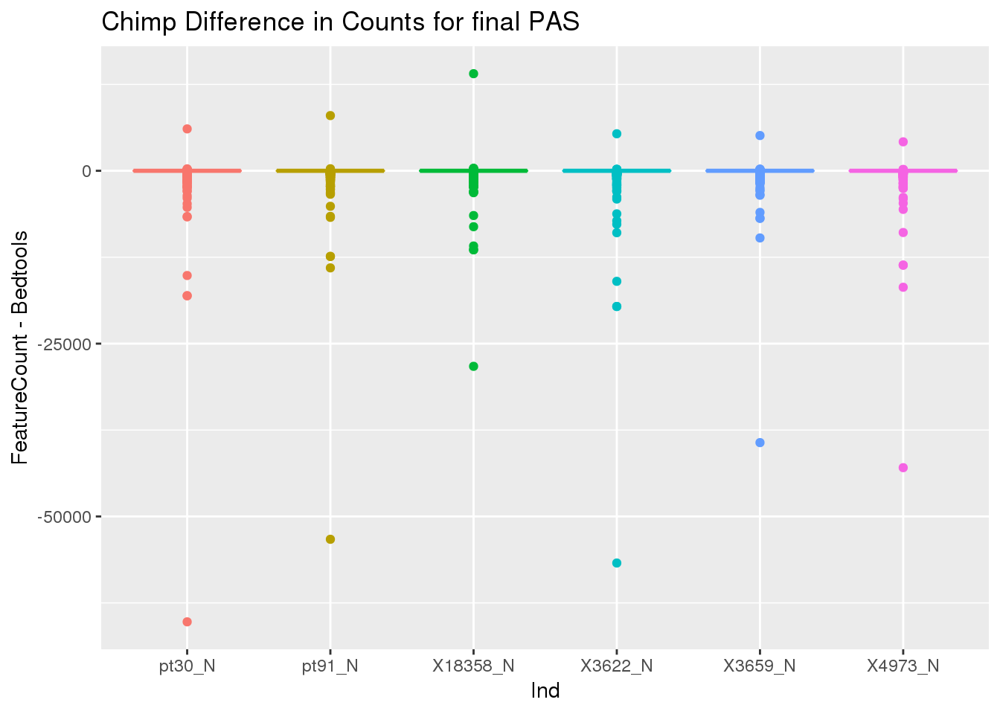
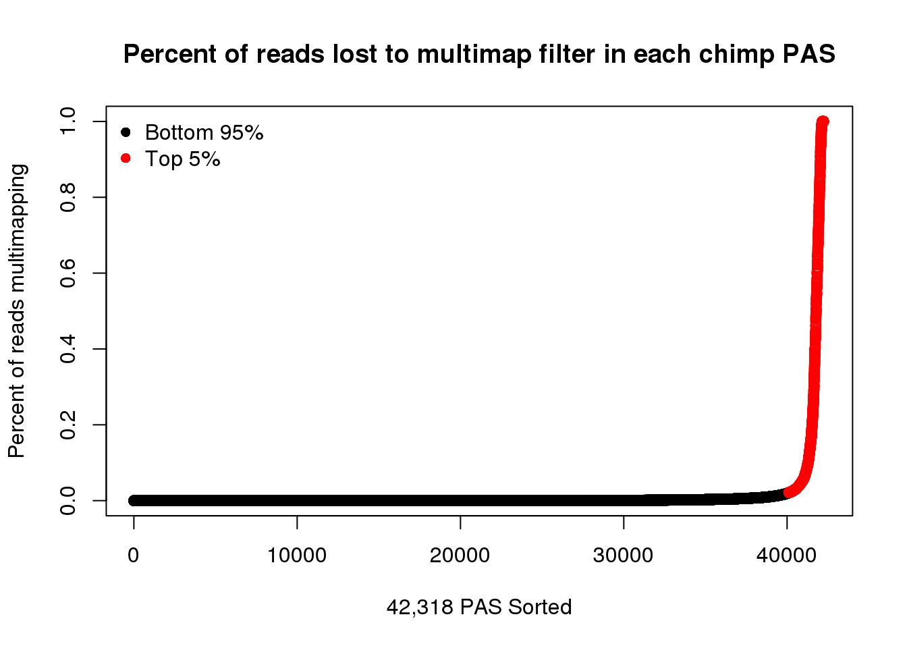
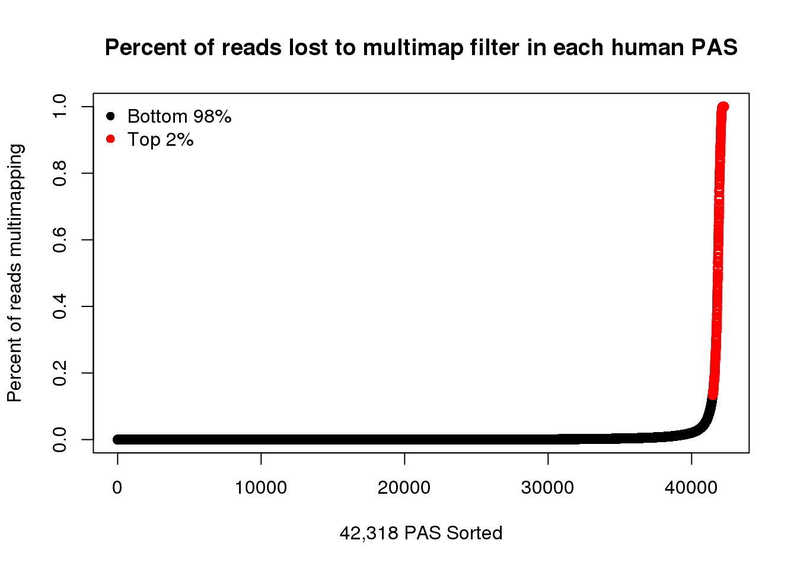
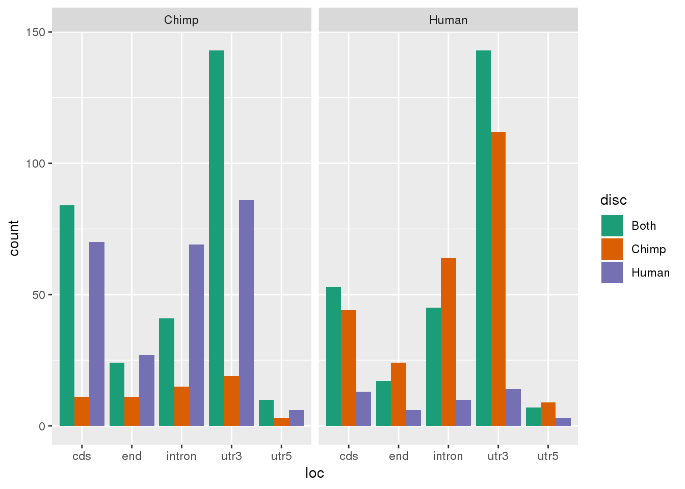
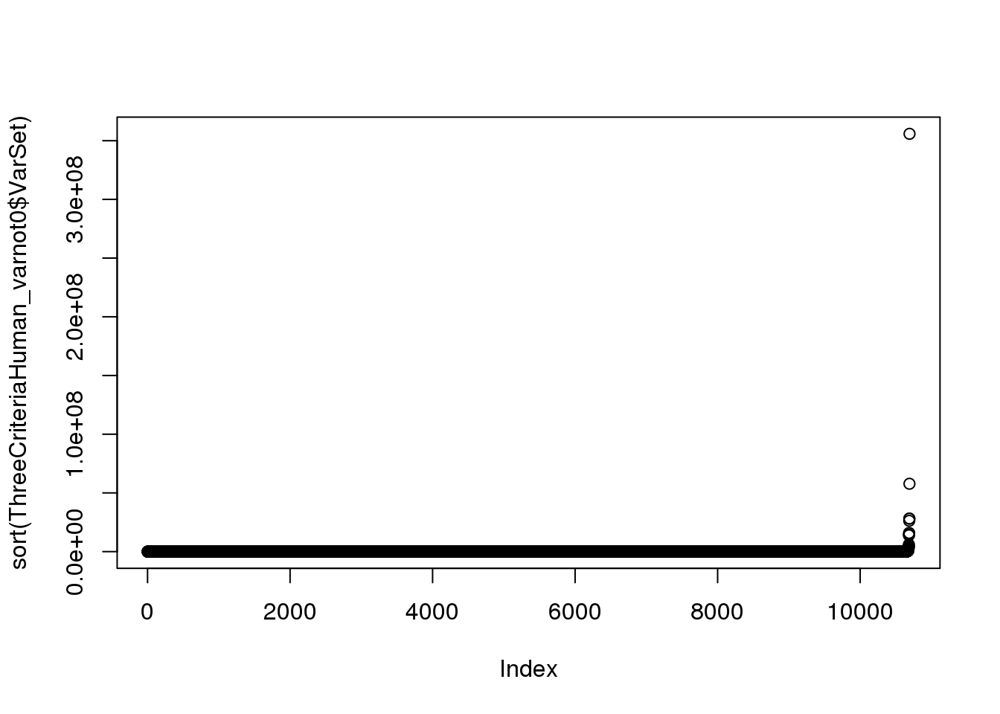
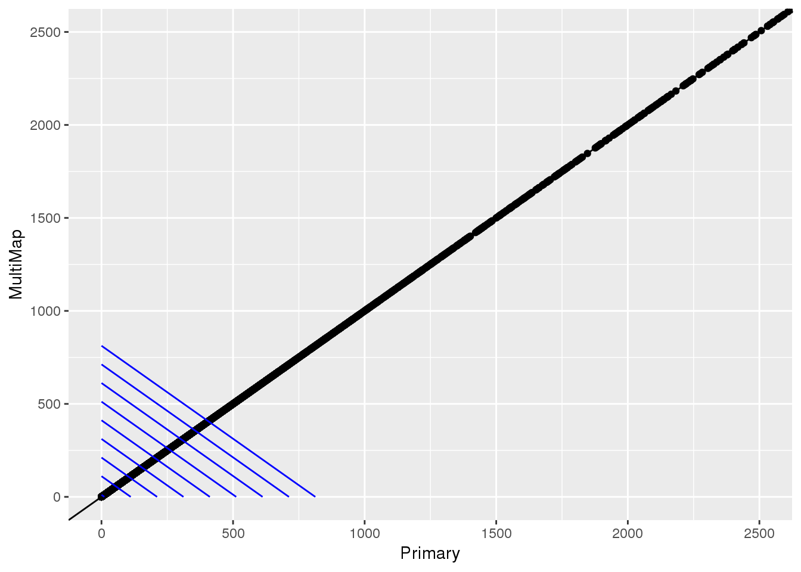

Last updated: 2020-03-28
Checks: 7 0
Knit directory: Comparative_APA/analysis/
This reproducible R Markdown analysis was created with workflowr (version 1.6.0). The Checks tab describes the reproducibility checks that were applied when the results were created. The Past versions tab lists the development history.
Great! Since the R Markdown file has been committed to the Git repository, you know the exact version of the code that produced these results.
Great job! The global environment was empty. Objects defined in the global environment can affect the analysis in your R Markdown file in unknown ways. For reproduciblity it’s best to always run the code in an empty environment.
The command set.seed(20190902) was run prior to running the code in the R Markdown file. Setting a seed ensures that any results that rely on randomness, e.g. subsampling or permutations, are reproducible.
Great job! Recording the operating system, R version, and package versions is critical for reproducibility.
Nice! There were no cached chunks for this analysis, so you can be confident that you successfully produced the results during this run.
Great job! Using relative paths to the files within your workflowr project makes it easier to run your code on other machines.
Great! You are using Git for version control. Tracking code development and connecting the code version to the results is critical for reproducibility. The version displayed above was the version of the Git repository at the time these results were generated.
Note that you need to be careful to ensure that all relevant files for the analysis have been committed to Git prior to generating the results (you can use wflow_publish or wflow_git_commit). workflowr only checks the R Markdown file, but you know if there are other scripts or data files that it depends on. Below is the status of the Git repository when the results were generated:
Ignored files:
Ignored: .DS_Store
Ignored: .Rhistory
Ignored: .Rproj.user/
Ignored: code/chimp_log/
Ignored: code/human_log/
Ignored: data/.DS_Store
Ignored: data/TrialFiltersMeta.txt.sb-9845453e-R58Y0Q/
Ignored: data/mediation_prot/
Ignored: data/metadata_HCpanel.txt.sb-a5794dd2-i594qs/
Ignored: output/.DS_Store
Untracked files:
Untracked: ._.DS_Store
Untracked: Chimp/
Untracked: Human/
Untracked: analysis/CrossChimpThreePrime.Rmd
Untracked: analysis/DiffTransProtvsExpression.Rmd
Untracked: analysis/DiffUsedUTR.Rmd
Untracked: analysis/GvizPlots.Rmd
Untracked: analysis/HandC.TvN
Untracked: analysis/PhenotypeOverlap10.Rmd
Untracked: analysis/annotationBias.Rmd
Untracked: analysis/assessReadQual.Rmd
Untracked: analysis/diffExpressionPantro6.Rmd
Untracked: analysis/pol2.Rmd
Untracked: code/._BothFCMM.sh
Untracked: code/._BothFCMMPrim.sh
Untracked: code/._BothFCnewOInclusive.sh
Untracked: code/._ChimpStarMM2.sh
Untracked: code/._ClassifyLeafviz.sh
Untracked: code/._Config_chimp.yaml
Untracked: code/._Config_chimp_full.yaml
Untracked: code/._Config_human.yaml
Untracked: code/._ConvertJunc2Bed.sh
Untracked: code/._CountNucleotides.py
Untracked: code/._CrossMapChimpRNA.sh
Untracked: code/._CrossMapThreeprime.sh
Untracked: code/._DiffSplice.sh
Untracked: code/._DiffSplicePlots.sh
Untracked: code/._DiffSplicePlots_gencode.sh
Untracked: code/._DiffSplice_gencode.sh
Untracked: code/._DiffSplice_removebad.sh
Untracked: code/._FindIntronForDomPAS.sh
Untracked: code/._FindIntronForDomPAS_DF.sh
Untracked: code/._GetMAPQscore.py
Untracked: code/._GetSecondaryMap.py
Untracked: code/._Lift5perPAS.sh
Untracked: code/._LiftFinalChimpJunc2Human.sh
Untracked: code/._LiftOrthoPAS2chimp.sh
Untracked: code/._MapBadSamples.sh
Untracked: code/._PAS_ATTAAA.sh
Untracked: code/._PAS_ATTAAA_df.sh
Untracked: code/._PAS_seqExpanded.sh
Untracked: code/._PASsequences.sh
Untracked: code/._PASsequences_DF.sh
Untracked: code/._PlotNuclearUsagebySpecies.R
Untracked: code/._PlotNuclearUsagebySpecies_DF.R
Untracked: code/._QuantMergedClusters.sh
Untracked: code/._RNATranscriptDTplot.sh
Untracked: code/._ReverseLiftFilter.R
Untracked: code/._RunFixLeafCluster.sh
Untracked: code/._RunNegMCMediation.sh
Untracked: code/._RunNegMCMediationDF.sh
Untracked: code/._RunPosMCMediationDF.err
Untracked: code/._RunPosMCMediationDF.sh
Untracked: code/._SAF2Bed.py
Untracked: code/._Snakefile
Untracked: code/._SnakefilePAS
Untracked: code/._SnakefilePASfilt
Untracked: code/._SortIndexBadSamples.sh
Untracked: code/._StarMM2.sh
Untracked: code/._TestFC.sh
Untracked: code/._assignPeak2Intronicregion
Untracked: code/._assignPeak2Intronicregion.sh
Untracked: code/._bed215upbed.py
Untracked: code/._bed2Bedbothstrand.py
Untracked: code/._bed2SAF_gen.py
Untracked: code/._buildIndecpantro5
Untracked: code/._buildIndecpantro5.sh
Untracked: code/._buildLeafviz.sh
Untracked: code/._buildLeafviz_leadAnno.sh
Untracked: code/._buildStarIndex.sh
Untracked: code/._chimpChromprder.sh
Untracked: code/._chimpMultiCov.sh
Untracked: code/._chimpMultiCov255.sh
Untracked: code/._chimpMultiCovInclusive.sh
Untracked: code/._chooseSignalSite.py
Untracked: code/._cleanbed2saf.py
Untracked: code/._cluster.json
Untracked: code/._cluster2bed.py
Untracked: code/._clusterLiftReverse.sh
Untracked: code/._clusterLiftReverse_removebad.sh
Untracked: code/._clusterLiftprimary.sh
Untracked: code/._clusterLiftprimary_removebad.sh
Untracked: code/._converBam2Junc.sh
Untracked: code/._converBam2Junc_removeBad.sh
Untracked: code/._extraSnakefiltpas
Untracked: code/._extractPhyloReg.py
Untracked: code/._extractPhyloRegGene.py
Untracked: code/._extractPhylopGeneral.ph
Untracked: code/._extractPhylopGeneral.py
Untracked: code/._extractPhylopReg200down.py
Untracked: code/._extractPhylopReg200up.py
Untracked: code/._filter5percPAS.py
Untracked: code/._filterNumChroms.py
Untracked: code/._filterPASforMP.py
Untracked: code/._filterPostLift.py
Untracked: code/._filterPrimaryread.py
Untracked: code/._filterSecondaryread.py
Untracked: code/._fixExonFC.py
Untracked: code/._fixLeafCluster.py
Untracked: code/._fixLiftedJunc.py
Untracked: code/._fixUTRexonanno.py
Untracked: code/._formathg38Anno.py
Untracked: code/._formatpantro6Anno.py
Untracked: code/._getRNAseqMapStats.sh
Untracked: code/._hg19MapStats.sh
Untracked: code/._humanChromorder.sh
Untracked: code/._humanMultiCov.sh
Untracked: code/._humanMultiCov255.sh
Untracked: code/._humanMultiCov_inclusive.sh
Untracked: code/._intersectLiftedPAS.sh
Untracked: code/._liftJunctionFiles.sh
Untracked: code/._liftPAS19to38.sh
Untracked: code/._liftedchimpJunc2human.sh
Untracked: code/._makeNuclearDapaplots.sh
Untracked: code/._makeNuclearDapaplots_DF.sh
Untracked: code/._makeSamplyGroupsHuman_TvN.py
Untracked: code/._mapRNAseqhg19.sh
Untracked: code/._mapRNAseqhg19_newPipeline.sh
Untracked: code/._maphg19.sh
Untracked: code/._maphg19_subjunc.sh
Untracked: code/._mediation_test.R
Untracked: code/._mergeChimp3prime_inhg38.sh
Untracked: code/._mergeandBWRNAseq.sh
Untracked: code/._mergedBam2BW.sh
Untracked: code/._nameClusters.py
Untracked: code/._negativeMediation_montecarlo.R
Untracked: code/._negativeMediation_montecarloDF.R
Untracked: code/._numMultimap.py
Untracked: code/._overlapMMandOrthoexon.sh
Untracked: code/._overlapapaQTLPAS.sh
Untracked: code/._parseHg38.py
Untracked: code/._postiveMediation_montecarlo_DF.R
Untracked: code/._prepareCleanLiftedFC_5perc4LC.py
Untracked: code/._prepareLeafvizAnno.sh
Untracked: code/._preparePAS4lift.py
Untracked: code/._primaryLift.sh
Untracked: code/._processhg38exons.py
Untracked: code/._quantJunc.sh
Untracked: code/._quantJunc_TEST.sh
Untracked: code/._quantJunc_removeBad.sh
Untracked: code/._quantMerged_seperatly.sh
Untracked: code/._recLiftchim2human.sh
Untracked: code/._revLiftPAShg38to19.sh
Untracked: code/._reverseLift.sh
Untracked: code/._runCheckReverseLift.sh
Untracked: code/._runChimpDiffIso.sh
Untracked: code/._runCountNucleotides.sh
Untracked: code/._runFilterNumChroms.sh
Untracked: code/._runHumanDiffIso.sh
Untracked: code/._runNuclearDiffIso_DF.sh
Untracked: code/._runNuclearDifffIso.sh
Untracked: code/._runTotalDiffIso.sh
Untracked: code/._run_chimpverifybam.sh
Untracked: code/._run_verifyBam.sh
Untracked: code/._snakemake.batch
Untracked: code/._snakemakePAS.batch
Untracked: code/._snakemakePASchimp.batch
Untracked: code/._snakemakePAShuman.batch
Untracked: code/._snakemake_chimp.batch
Untracked: code/._snakemake_human.batch
Untracked: code/._snakemakefiltPAS.batch
Untracked: code/._snakemakefiltPAS_chimp
Untracked: code/._snakemakefiltPAS_chimp.sh
Untracked: code/._snakemakefiltPAS_human.sh
Untracked: code/._spliceSite2Fasta.py
Untracked: code/._submit-snakemake-chimp.sh
Untracked: code/._submit-snakemake-human.sh
Untracked: code/._submit-snakemakePAS-chimp.sh
Untracked: code/._submit-snakemakePAS-human.sh
Untracked: code/._submit-snakemakefiltPAS-chimp.sh
Untracked: code/._submit-snakemakefiltPAS-human.sh
Untracked: code/._subset_diffisopheno_Nuclear_HvC.py
Untracked: code/._subset_diffisopheno_Nuclear_HvC_DF.py
Untracked: code/._subset_diffisopheno_Total_HvC.py
Untracked: code/._threeprimeOrthoFC.sh
Untracked: code/._transcriptDTplotsNuclear.sh
Untracked: code/._verifyBam4973.sh
Untracked: code/._verifyBam4973inHuman.sh
Untracked: code/._wrap_chimpverifybam.sh
Untracked: code/._wrap_verifyBam.sh
Untracked: code/._writeMergecode.py
Untracked: code/.snakemake/
Untracked: code/BothFCMM.err
Untracked: code/BothFCMM.out
Untracked: code/BothFCMM.sh
Untracked: code/BothFCMMPrim.err
Untracked: code/BothFCMMPrim.out
Untracked: code/BothFCMMPrim.sh
Untracked: code/BothFCnewOInclusive.sh
Untracked: code/BothFCnewOInclusive.sh.err
Untracked: code/BothFCnewOInclusive.sh.out
Untracked: code/ChimpStarMM2.err
Untracked: code/ChimpStarMM2.out
Untracked: code/ChimpStarMM2.sh
Untracked: code/ClassifyLeafviz.sh
Untracked: code/Config_chimp.yaml
Untracked: code/Config_chimp_full.yaml
Untracked: code/Config_human.yaml
Untracked: code/ConvertJunc2Bed.err
Untracked: code/ConvertJunc2Bed.out
Untracked: code/ConvertJunc2Bed.sh
Untracked: code/CountNucleotides.py
Untracked: code/CrossMapChimpRNA.sh
Untracked: code/CrossMapThreeprime.sh
Untracked: code/CrossmapChimp3prime.err
Untracked: code/CrossmapChimp3prime.out
Untracked: code/CrossmapChimpRNA.err
Untracked: code/CrossmapChimpRNA.out
Untracked: code/DiffSplice.err
Untracked: code/DiffSplice.out
Untracked: code/DiffSplice.sh
Untracked: code/DiffSplicePlots.err
Untracked: code/DiffSplicePlots.out
Untracked: code/DiffSplicePlots.sh
Untracked: code/DiffSplicePlots_gencode.sh
Untracked: code/DiffSplice_gencode.sh
Untracked: code/DiffSplice_removebad.err
Untracked: code/DiffSplice_removebad.out
Untracked: code/DiffSplice_removebad.sh
Untracked: code/FilterReverseLift.err
Untracked: code/FilterReverseLift.out
Untracked: code/FindIntronForDomPAS.err
Untracked: code/FindIntronForDomPAS.out
Untracked: code/FindIntronForDomPAS.sh
Untracked: code/FindIntronForDomPAS_DF.sh
Untracked: code/GencodeDiffSplice.err
Untracked: code/GencodeDiffSplice.out
Untracked: code/GetMAPQscore.py
Untracked: code/GetSecondaryMap.py
Untracked: code/HchromOrder.err
Untracked: code/HchromOrder.out
Untracked: code/IntersectMMandOrtho.err
Untracked: code/IntersectMMandOrtho.out
Untracked: code/JunctionLift.err
Untracked: code/JunctionLift.out
Untracked: code/JunctionLiftFinalChimp.err
Untracked: code/JunctionLiftFinalChimp.out
Untracked: code/Lift5perPAS.sh
Untracked: code/Lift5perPASbed.err
Untracked: code/Lift5perPASbed.out
Untracked: code/LiftClustersFirst.err
Untracked: code/LiftClustersFirst.out
Untracked: code/LiftClustersFirst_remove.err
Untracked: code/LiftClustersFirst_remove.out
Untracked: code/LiftClustersSecond.err
Untracked: code/LiftClustersSecond.out
Untracked: code/LiftClustersSecond_remove.err
Untracked: code/LiftClustersSecond_remove.out
Untracked: code/LiftFinalChimpJunc2Human.sh
Untracked: code/LiftOrthoPAS2chimp.sh
Untracked: code/LiftorthoPAS.err
Untracked: code/LiftorthoPASt.out
Untracked: code/Log.out
Untracked: code/MapBadSamples.err
Untracked: code/MapBadSamples.out
Untracked: code/MapBadSamples.sh
Untracked: code/MapStats.err
Untracked: code/MapStats.out
Untracked: code/MaxEntCode/
Untracked: code/MergeClusters.err
Untracked: code/MergeClusters.out
Untracked: code/MergeClusters.sh
Untracked: code/PAS_ATTAAA.err
Untracked: code/PAS_ATTAAA.out
Untracked: code/PAS_ATTAAA.sh
Untracked: code/PAS_ATTAAADF.err
Untracked: code/PAS_ATTAAADF.out
Untracked: code/PAS_ATTAAA_df.sh
Untracked: code/PAS_seqExpanded.sh
Untracked: code/PAS_sequence.err
Untracked: code/PAS_sequence.out
Untracked: code/PAS_sequenceDF.err
Untracked: code/PAS_sequenceDF.out
Untracked: code/PASexpanded_sequenceDF.err
Untracked: code/PASexpanded_sequenceDF.out
Untracked: code/PASsequences.sh
Untracked: code/PASsequences_DF.sh
Untracked: code/PlotNuclearUsagebySpecies.R
Untracked: code/PlotNuclearUsagebySpecies_DF.R
Untracked: code/QuantMergeClusters
Untracked: code/QuantMergeClusters.err
Untracked: code/QuantMergeClusters.out
Untracked: code/QuantMergedClusters.sh
Untracked: code/RNATranscriptDTplot.err
Untracked: code/RNATranscriptDTplot.out
Untracked: code/RNATranscriptDTplot.sh
Untracked: code/Rev_liftoverPAShg19to38.err
Untracked: code/Rev_liftoverPAShg19to38.out
Untracked: code/ReverseLiftFilter.R
Untracked: code/RunFixCluster.err
Untracked: code/RunFixCluster.out
Untracked: code/RunFixLeafCluster.sh
Untracked: code/RunNegMCMediation.err
Untracked: code/RunNegMCMediation.sh
Untracked: code/RunNegMCMediationDF.err
Untracked: code/RunNegMCMediationDF.out
Untracked: code/RunNegMCMediationDF.sh
Untracked: code/RunNegMCMediationr.out
Untracked: code/RunPosMCMediation.err
Untracked: code/RunPosMCMediation.sh
Untracked: code/RunPosMCMediationDF.err
Untracked: code/RunPosMCMediationDF.out
Untracked: code/RunPosMCMediationDF.sh
Untracked: code/RunPosMCMediationr.out
Untracked: code/SAF215upbed_gen.py
Untracked: code/SAF2Bed.py
Untracked: code/Snakefile
Untracked: code/SnakefilePAS
Untracked: code/SnakefilePASfilt
Untracked: code/SortIndexBadSamples.err
Untracked: code/SortIndexBadSamples.out
Untracked: code/SortIndexBadSamples.sh
Untracked: code/StarMM2.err
Untracked: code/StarMM2.out
Untracked: code/StarMM2.sh
Untracked: code/TestFC.err
Untracked: code/TestFC.out
Untracked: code/TestFC.sh
Untracked: code/TotalTranscriptDTplot.err
Untracked: code/TotalTranscriptDTplot.out
Untracked: code/Upstream10Bases_general.py
Untracked: code/apaQTLsnake.err
Untracked: code/apaQTLsnake.out
Untracked: code/apaQTLsnakePAS.err
Untracked: code/apaQTLsnakePAS.out
Untracked: code/apaQTLsnakePAShuman.err
Untracked: code/assignPeak2Intronicregion.err
Untracked: code/assignPeak2Intronicregion.out
Untracked: code/assignPeak2Intronicregion.sh
Untracked: code/bam2junc.err
Untracked: code/bam2junc.out
Untracked: code/bam2junc_remove.err
Untracked: code/bam2junc_remove.out
Untracked: code/bed215upbed.py
Untracked: code/bed2Bedbothstrand.py
Untracked: code/bed2SAF_gen.py
Untracked: code/bed2saf.py
Untracked: code/bg_to_cov.py
Untracked: code/buildIndecpantro5
Untracked: code/buildIndecpantro5.sh
Untracked: code/buildLeafviz.err
Untracked: code/buildLeafviz.out
Untracked: code/buildLeafviz.sh
Untracked: code/buildLeafviz_leadAnno.sh
Untracked: code/buildLeafviz_leafanno.err
Untracked: code/buildLeafviz_leafanno.out
Untracked: code/buildStarIndex.sh
Untracked: code/callPeaksYL.py
Untracked: code/chimpChromprder.sh
Untracked: code/chimpMultiCov.err
Untracked: code/chimpMultiCov.out
Untracked: code/chimpMultiCov.sh
Untracked: code/chimpMultiCov255.sh
Untracked: code/chimpMultiCovInclusive.err
Untracked: code/chimpMultiCovInclusive.out
Untracked: code/chimpMultiCovInclusive.sh
Untracked: code/chooseAnno2Bed.py
Untracked: code/chooseAnno2SAF.py
Untracked: code/chooseSignalSite.py
Untracked: code/chromOrder.err
Untracked: code/chromOrder.out
Untracked: code/classifyLeafviz.err
Untracked: code/classifyLeafviz.out
Untracked: code/cleanbed2saf.py
Untracked: code/cluster.json
Untracked: code/cluster2bed.py
Untracked: code/clusterLiftReverse.sh
Untracked: code/clusterLiftReverse_removebad.sh
Untracked: code/clusterLiftprimary.sh
Untracked: code/clusterLiftprimary_removebad.sh
Untracked: code/clusterPAS.json
Untracked: code/clusterfiltPAS.json
Untracked: code/comands2Mege.sh
Untracked: code/converBam2Junc.sh
Untracked: code/converBam2Junc_removeBad.sh
Untracked: code/convertNumeric.py
Untracked: code/environment.yaml
Untracked: code/extraSnakefiltpas
Untracked: code/extractPhyloReg.py
Untracked: code/extractPhyloRegGene.py
Untracked: code/extractPhylopGeneral.py
Untracked: code/extractPhylopReg200down.py
Untracked: code/extractPhylopReg200up.py
Untracked: code/filter5perc.R
Untracked: code/filter5percPAS.py
Untracked: code/filter5percPheno.py
Untracked: code/filterBamforMP.pysam2_gen.py
Untracked: code/filterJuncChroms.err
Untracked: code/filterJuncChroms.out
Untracked: code/filterMissprimingInNuc10_gen.py
Untracked: code/filterNumChroms.py
Untracked: code/filterPASforMP.py
Untracked: code/filterPostLift.py
Untracked: code/filterPrimaryread.py
Untracked: code/filterSAFforMP_gen.py
Untracked: code/filterSecondaryread.py
Untracked: code/filterSortBedbyCleanedBed_gen.R
Untracked: code/filterpeaks.py
Untracked: code/fixExonFC.py
Untracked: code/fixFChead.py
Untracked: code/fixFChead_bothfrac.py
Untracked: code/fixLeafCluster.py
Untracked: code/fixLiftedJunc.py
Untracked: code/fixUTRexonanno.py
Untracked: code/formathg38Anno.py
Untracked: code/generateStarIndex.err
Untracked: code/generateStarIndex.out
Untracked: code/generateStarIndexHuman.err
Untracked: code/generateStarIndexHuman.out
Untracked: code/getRNAseqMapStats.sh
Untracked: code/hg19MapStats.err
Untracked: code/hg19MapStats.out
Untracked: code/hg19MapStats.sh
Untracked: code/humanChromorder.sh
Untracked: code/humanFiles
Untracked: code/humanMultiCov.err
Untracked: code/humanMultiCov.out
Untracked: code/humanMultiCov.sh
Untracked: code/humanMultiCov255.err
Untracked: code/humanMultiCov255.out
Untracked: code/humanMultiCov255.sh
Untracked: code/humanMultiCovInclusive.err
Untracked: code/humanMultiCovInclusive.out
Untracked: code/humanMultiCov_inclusive.sh
Untracked: code/intersectAnno.err
Untracked: code/intersectAnno.out
Untracked: code/intersectAnnoExt.err
Untracked: code/intersectAnnoExt.out
Untracked: code/intersectLiftedPAS.sh
Untracked: code/leafcutter_merge_regtools_redo.py
Untracked: code/liftJunctionFiles.sh
Untracked: code/liftPAS19to38.sh
Untracked: code/liftoverPAShg19to38.err
Untracked: code/liftoverPAShg19to38.out
Untracked: code/log/
Untracked: code/make5percPeakbed.py
Untracked: code/makeFileID.py
Untracked: code/makeNuclearDapaplots.sh
Untracked: code/makeNuclearDapaplots_DF.sh
Untracked: code/makeNuclearPlots.err
Untracked: code/makeNuclearPlots.out
Untracked: code/makeNuclearPlotsDF.err
Untracked: code/makeNuclearPlotsDF.out
Untracked: code/makePheno.py
Untracked: code/makeSamplyGroupsChimp_TvN.py
Untracked: code/makeSamplyGroupsHuman_TvN.py
Untracked: code/mapRNAseqhg19.sh
Untracked: code/mapRNAseqhg19_newPipeline.sh
Untracked: code/maphg19.err
Untracked: code/maphg19.out
Untracked: code/maphg19.sh
Untracked: code/maphg19_new.err
Untracked: code/maphg19_new.out
Untracked: code/maphg19_sub.err
Untracked: code/maphg19_sub.out
Untracked: code/maphg19_subjunc.sh
Untracked: code/mediation_test.R
Untracked: code/merge.err
Untracked: code/mergeChimp3prime_inhg38.sh
Untracked: code/merge_leafcutter_clusters_redo.py
Untracked: code/mergeandBWRNAseq.sh
Untracked: code/mergeandsort_ChimpinHuman.err
Untracked: code/mergeandsort_ChimpinHuman.out
Untracked: code/mergedBam2BW.sh
Untracked: code/mergedbam2bw.err
Untracked: code/mergedbam2bw.out
Untracked: code/mergedbamRNAand2bw.err
Untracked: code/mergedbamRNAand2bw.out
Untracked: code/nameClusters.py
Untracked: code/namePeaks.py
Untracked: code/negativeMediation_montecarlo.R
Untracked: code/negativeMediation_montecarloDF.R
Untracked: code/nuclearTranscriptDTplot.err
Untracked: code/nuclearTranscriptDTplot.out
Untracked: code/numMultimap.py
Untracked: code/overlapMMandOrthoexon.sh
Untracked: code/overlapPAS.err
Untracked: code/overlapPAS.out
Untracked: code/overlapapaQTLPAS.sh
Untracked: code/overlapapaQTLPAS_extended.sh
Untracked: code/overlapapaQTLPAS_samples.sh
Untracked: code/parseHg38.py
Untracked: code/peak2PAS.py
Untracked: code/pheno2countonly.R
Untracked: code/postiveMediation_montecarlo.R
Untracked: code/postiveMediation_montecarlo_DF.R
Untracked: code/prepareAnnoLeafviz.err
Untracked: code/prepareAnnoLeafviz.out
Untracked: code/prepareCleanLiftedFC_5perc4LC.py
Untracked: code/prepareLeafvizAnno.sh
Untracked: code/preparePAS4lift.py
Untracked: code/prepare_phenotype_table.py
Untracked: code/primaryLift.err
Untracked: code/primaryLift.out
Untracked: code/primaryLift.sh
Untracked: code/processhg38exons.py
Untracked: code/quantJunc.sh
Untracked: code/quantJunc_TEST.sh
Untracked: code/quantJunc_removeBad.sh
Untracked: code/quantLiftedPAS.err
Untracked: code/quantLiftedPAS.out
Untracked: code/quantLiftedPAS.sh
Untracked: code/quatJunc.err
Untracked: code/quatJunc.out
Untracked: code/recChimpback2Human.err
Untracked: code/recChimpback2Human.out
Untracked: code/recLiftchim2human.sh
Untracked: code/revLift.err
Untracked: code/revLift.out
Untracked: code/revLiftPAShg38to19.sh
Untracked: code/reverseLift.sh
Untracked: code/runCheckReverseLift.sh
Untracked: code/runChimpDiffIso.sh
Untracked: code/runChimpDiffIsoDF.sh
Untracked: code/runCountNucleotides.err
Untracked: code/runCountNucleotides.out
Untracked: code/runCountNucleotides.sh
Untracked: code/runCountNucleotidesPantro6.err
Untracked: code/runCountNucleotidesPantro6.out
Untracked: code/runCountNucleotides_pantro6.sh
Untracked: code/runFilterNumChroms.sh
Untracked: code/runHumanDiffIso.sh
Untracked: code/runHumanDiffIsoDF.sh
Untracked: code/runNuclearDiffIso_DF.sh
Untracked: code/runNuclearDifffIso.sh
Untracked: code/runTotalDiffIso.sh
Untracked: code/run_Chimpleafcutter_ds.err
Untracked: code/run_Chimpleafcutter_ds.out
Untracked: code/run_Chimpverifybam.err
Untracked: code/run_Chimpverifybam.out
Untracked: code/run_Humanleafcutter_dF.err
Untracked: code/run_Humanleafcutter_dF.out
Untracked: code/run_Humanleafcutter_ds.err
Untracked: code/run_Humanleafcutter_ds.out
Untracked: code/run_Nuclearleafcutter_ds.err
Untracked: code/run_Nuclearleafcutter_ds.out
Untracked: code/run_Nuclearleafcutter_dsDF.err
Untracked: code/run_Nuclearleafcutter_dsDF.out
Untracked: code/run_Totalleafcutter_ds.err
Untracked: code/run_Totalleafcutter_ds.out
Untracked: code/run_chimpverifybam.sh
Untracked: code/run_verifyBam.sh
Untracked: code/run_verifybam.err
Untracked: code/run_verifybam.out
Untracked: code/slurm-62824013.out
Untracked: code/slurm-62825841.out
Untracked: code/slurm-62826116.out
Untracked: code/slurm-64108209.out
Untracked: code/slurm-64108521.out
Untracked: code/slurm-64108557.out
Untracked: code/snakePASChimp.err
Untracked: code/snakePASChimp.out
Untracked: code/snakePAShuman.out
Untracked: code/snakemake.batch
Untracked: code/snakemakeChimp.err
Untracked: code/snakemakeChimp.out
Untracked: code/snakemakeHuman.err
Untracked: code/snakemakeHuman.out
Untracked: code/snakemakePAS.batch
Untracked: code/snakemakePASFiltChimp.err
Untracked: code/snakemakePASFiltChimp.out
Untracked: code/snakemakePASFiltHuman.err
Untracked: code/snakemakePASFiltHuman.out
Untracked: code/snakemakePASchimp.batch
Untracked: code/snakemakePAShuman.batch
Untracked: code/snakemake_chimp.batch
Untracked: code/snakemake_human.batch
Untracked: code/snakemakefiltPAS.batch
Untracked: code/snakemakefiltPAS_chimp.sh
Untracked: code/snakemakefiltPAS_human.sh
Untracked: code/spliceSite2Fasta.py
Untracked: code/submit-snakemake-chimp.sh
Untracked: code/submit-snakemake-human.sh
Untracked: code/submit-snakemakePAS-chimp.sh
Untracked: code/submit-snakemakePAS-human.sh
Untracked: code/submit-snakemakefiltPAS-chimp.sh
Untracked: code/submit-snakemakefiltPAS-human.sh
Untracked: code/subset_diffisopheno.py
Untracked: code/subset_diffisopheno_Chimp_tvN.py
Untracked: code/subset_diffisopheno_Chimp_tvN_DF.py
Untracked: code/subset_diffisopheno_Huma_tvN.py
Untracked: code/subset_diffisopheno_Huma_tvN_DF.py
Untracked: code/subset_diffisopheno_Nuclear_HvC.py
Untracked: code/subset_diffisopheno_Nuclear_HvC_DF.py
Untracked: code/subset_diffisopheno_Total_HvC.py
Untracked: code/test
Untracked: code/test.txt
Untracked: code/threeprimeOrthoFC.out
Untracked: code/threeprimeOrthoFC.sh
Untracked: code/threeprimeOrthoFCcd.err
Untracked: code/transcriptDTplotsNuclear.sh
Untracked: code/transcriptDTplotsTotal.sh
Untracked: code/verifyBam4973.sh
Untracked: code/verifyBam4973inHuman.sh
Untracked: code/verifybam4973.err
Untracked: code/verifybam4973.out
Untracked: code/verifybam4973HumanMap.err
Untracked: code/verifybam4973HumanMap.out
Untracked: code/wrap_Chimpverifybam.err
Untracked: code/wrap_Chimpverifybam.out
Untracked: code/wrap_chimpverifybam.sh
Untracked: code/wrap_verifyBam.sh
Untracked: code/wrap_verifybam.err
Untracked: code/wrap_verifybam.out
Untracked: code/writeMergecode.py
Untracked: data/._.DS_Store
Untracked: data/._HC_filenames.txt
Untracked: data/._HC_filenames.txt.sb-4426323c-IKIs0S
Untracked: data/._HC_filenames.xlsx
Untracked: data/._MapPantro6_meta.txt
Untracked: data/._MapPantro6_meta.txt.sb-a5794dd2-Cskmlm
Untracked: data/._MapPantro6_meta.xlsx
Untracked: data/._OppositeSpeciesMap.txt
Untracked: data/._OppositeSpeciesMap.txt.sb-a5794dd2-mayWJf
Untracked: data/._OppositeSpeciesMap.xlsx
Untracked: data/._RNASEQ_metadata.txt
Untracked: data/._RNASEQ_metadata.txt.sb-4426323c-TE4ns3
Untracked: data/._RNASEQ_metadata.txt.sb-51f67ae1-HXp7Gq
Untracked: data/._RNASEQ_metadata_2Removed.txt
Untracked: data/._RNASEQ_metadata_2Removed.txt.sb-4426323c-a4lBwx
Untracked: data/._RNASEQ_metadata_2Removed.xlsx
Untracked: data/._RNASEQ_metadata_stranded.txt
Untracked: data/._RNASEQ_metadata_stranded.txt.sb-a5794dd2-D659m2
Untracked: data/._RNASEQ_metadata_stranded.txt.sb-a5794dd2-ImNMoY
Untracked: data/._RNASEQ_metadata_stranded.txt.sb-e4bf31f0-ZGnGgl
Untracked: data/._RNASEQ_metadata_stranded.xlsx
Untracked: data/._TrialFiltersMeta.txt
Untracked: data/._TrialFiltersMeta.txt.sb-9845453e-R58Y0Q
Untracked: data/._metadata_HCpanel.txt
Untracked: data/._metadata_HCpanel.txt.sb-a3d92a2d-b9cYoF
Untracked: data/._metadata_HCpanel.txt.sb-a5794dd2-i594qs
Untracked: data/._metadata_HCpanel.txt.sb-f4823d1e-qihGek
Untracked: data/._metadata_HCpanel.xlsx
Untracked: data/._metadata_HCpanel_frompantro5.xlsx
Untracked: data/._~$RNASEQ_metadata.xlsx
Untracked: data/._~$metadata_HCpanel.xlsx
Untracked: data/._.xlsx
Untracked: data/BaseComp/
Untracked: data/CompapaQTLpas/
Untracked: data/DNDS/
Untracked: data/DTmatrix/
Untracked: data/DiffExpression/
Untracked: data/DiffIso_Nuclear/
Untracked: data/DiffIso_Nuclear_DF/
Untracked: data/DiffIso_Total/
Untracked: data/DiffSplice/
Untracked: data/DiffSplice_liftedJunc/
Untracked: data/DiffSplice_removeBad/
Untracked: data/DominantPAS/
Untracked: data/DominantPAS_DF/
Untracked: data/EvalPantro5/
Untracked: data/HC_filenames.txt
Untracked: data/HC_filenames.xlsx
Untracked: data/Khan_prot/
Untracked: data/Li_eqtls/
Untracked: data/MapPantro6_meta.txt
Untracked: data/MapPantro6_meta.xlsx
Untracked: data/MapStats/
Untracked: data/NormalizedClusters/
Untracked: data/NuclearHvC/
Untracked: data/NuclearHvC_DF/
Untracked: data/OppositeSpeciesMap.txt
Untracked: data/OppositeSpeciesMap.xlsx
Untracked: data/OrthoExonBed/
Untracked: data/OverlapBenchmark/
Untracked: data/OverlappingPAS/
Untracked: data/PAS/
Untracked: data/PAS_SAF/
Untracked: data/PAS_doubleFilter/
Untracked: data/Peaks_5perc/
Untracked: data/Pheno_5perc/
Untracked: data/Pheno_5perc_DF_nuclear/
Untracked: data/Pheno_5perc_nuclear/
Untracked: data/Pheno_5perc_nuclear_old/
Untracked: data/Pheno_5perc_total/
Untracked: data/PhyloP/
Untracked: data/RNASEQ_metadata.txt
Untracked: data/RNASEQ_metadata_2Removed.txt
Untracked: data/RNASEQ_metadata_2Removed.xlsx
Untracked: data/RNASEQ_metadata_stranded.txt
Untracked: data/RNASEQ_metadata_stranded.txt.sb-e4bf31f0-ZGnGgl/
Untracked: data/RNASEQ_metadata_stranded.xlsx
Untracked: data/SignalSites/
Untracked: data/SignalSites_doublefilter/
Untracked: data/SpliceSite/
Untracked: data/TestMM2/
Untracked: data/TestMM2_PrimaryRead/
Untracked: data/TestMM2_SeondaryRead/
Untracked: data/TestMM2_quality/
Untracked: data/Test_FC_methods/
Untracked: data/Threeprime2Ortho/
Untracked: data/TotalHvC/
Untracked: data/TrialFiltersMeta.txt
Untracked: data/TwoBadSampleAnalysis/
Untracked: data/Wang_ribo/
Untracked: data/apaQTLGenes/
Untracked: data/bioGRID/
Untracked: data/chainFiles/
Untracked: data/cleanPeaks_anno/
Untracked: data/cleanPeaks_byspecies/
Untracked: data/cleanPeaks_lifted/
Untracked: data/files4viz_nuclear/
Untracked: data/files4viz_nuclear_DF/
Untracked: data/gviz/
Untracked: data/leafviz/
Untracked: data/liftover_files/
Untracked: data/mediation/
Untracked: data/mediation_DF/
Untracked: data/metadata_HCpanel.txt
Untracked: data/metadata_HCpanel.xlsx
Untracked: data/metadata_HCpanel_frompantro5.txt
Untracked: data/metadata_HCpanel_frompantro5.xlsx
Untracked: data/multimap/
Untracked: data/primaryLift/
Untracked: data/reverseLift/
Untracked: data/testQuant/
Untracked: data/~$RNASEQ_metadata.xlsx
Untracked: data/~$metadata_HCpanel.xlsx
Untracked: data/.xlsx
Untracked: output/._.DS_Store
Untracked: output/dtPlots/
Untracked: projectNotes.Rmd
Untracked: proteinModelSet.Rmd
Unstaged changes:
Modified: analysis/DiffUsedIntronic.Rmd
Modified: analysis/ExploredAPA.Rmd
Modified: analysis/ExploredAPA_DF.Rmd
Modified: analysis/OppositeMap.Rmd
Modified: analysis/SpliceSiteStrength.Rmd
Modified: analysis/TotalVNuclearBothSpecies.Rmd
Modified: analysis/annotationInfo.Rmd
Modified: analysis/changeMisprimcut.Rmd
Modified: analysis/comp2apaQTLPAS.Rmd
Modified: analysis/correlationPhenos.Rmd
Modified: analysis/dAPAandapaQTL_DF.Rmd
Modified: analysis/establishCutoffs.Rmd
Modified: analysis/investigatePantro5.Rmd
Modified: analysis/multiMap.Rmd
Modified: analysis/speciesSpecific.Rmd
Modified: analysis/upsetter_DF.Rmd
Note that any generated files, e.g. HTML, png, CSS, etc., are not included in this status report because it is ok for generated content to have uncommitted changes.
These are the previous versions of the R Markdown and HTML files. If you’ve configured a remote Git repository (see ?wflow_git_remote), click on the hyperlinks in the table below to view them.
| File | Version | Author | Date | Message |
|---|---|---|---|---|
| Rmd | 706fa0d | brimittleman | 2020-03-28 | add mm exp code |
| html | 3d4dd47 | brimittleman | 2020-03-27 | Build site. |
| Rmd | f92b89c | brimittleman | 2020-03-26 | add ortho exon and new mm |
| html | 1fad12e | brimittleman | 2020-03-25 | Build site. |
| Rmd | 4e6bd5a | brimittleman | 2020-03-25 | fix mm |
| html | 478a504 | brimittleman | 2020-03-24 | Build site. |
| Rmd | 646844c | brimittleman | 2020-03-24 | add write out |
| html | f0c8049 | brimittleman | 2020-03-23 | Build site. |
| Rmd | f11a628 | brimittleman | 2020-03-23 | plots for multimap |
| html | cd2bced | brimittleman | 2020-03-23 | Build site. |
| Rmd | 0e55318 | brimittleman | 2020-03-23 | diagnose multimap |
| html | 02f5c26 | brimittleman | 2020-03-20 | Build site. |
| Rmd | a4d172b | brimittleman | 2020-03-20 | add mm res |
| html | 246d60c | brimittleman | 2020-03-19 | Build site. |
| Rmd | b6ccdbc | brimittleman | 2020-03-19 | add new quat |
library(tidyverse)── Attaching packages ────────────────────────────────────────────────────────────────────────────── tidyverse 1.2.1 ──✔ ggplot2 3.1.1 ✔ purrr 0.3.2
✔ tibble 2.1.1 ✔ dplyr 0.8.0.1
✔ tidyr 0.8.3 ✔ stringr 1.3.1
✔ readr 1.3.1 ✔ forcats 0.3.0 ── Conflicts ───────────────────────────────────────────────────────────────────────────────── tidyverse_conflicts() ──
✖ dplyr::filter() masks stats::filter()
✖ dplyr::lag() masks stats::lag()library(ggpubr)Loading required package: magrittr
Attaching package: 'magrittr'The following object is masked from 'package:purrr':
set_namesThe following object is masked from 'package:tidyr':
extractlibrary(VennDiagram)Loading required package: gridLoading required package: futile.logger
Attaching package: 'VennDiagram'The following object is masked from 'package:ggpubr':
rotatelibrary(Matrix)
Attaching package: 'Matrix'The following object is masked from 'package:tidyr':
expandI am worried about using featureCounts. It looks like there are reads that are not counted. In this analysis, I will look at correlation between counts as well as the specific locations I have been worried about.
First, I will do this in human nuclear with the final PAS.
This is the fixed strand. The
Meta=read.table("../data/PAS_doubleFilter/PAS_10perc_either_HumanCoord_BothUsage_meta_doubleFilter.txt",header = T)
ChimpMeta=read.table("../data/PAS_doubleFilter/PAS_doublefilter_either_ChimpCoordChimpUsage.sort.bed", col.names = c("chr","start","end", "PAS", "score", "strand"),stringsAsFactors = F) %>% select(PAS)
HumanCountsFeatureCounts=read.table("../Human/data/CleanLiftedPeaks_FC/ALLPAS_postLift_LocParsed_Human_fixed.fc", header = T) %>% separate(Geneid, into=c("disc", "PAS", "chr2", "start2", "end2", 'strand', 'geneid'), sep=":") %>% select(-contains("_T")) %>% filter(PAS %in% Meta$PAS)
ChimpCountsFeatureCounts=read.table("../Chimp/data/CleanLiftedPeaks_FC/ALLPAS_postLift_LocParsed_Chimp_fixed.fc", header = T) %>% separate(Geneid, into=c("disc", "PAS", "chr2", "start2", "end2", 'strand', 'geneid'), sep=":") %>% select(-contains("_T")) %>% right_join(ChimpMeta,by="PAS")First use the bedtools method:
mkdir ../data/testQuant
sbatch humanMultiCov.sh
sbatch chimpMultiCov.shHumanDFMulticov=read.table("../data/testQuant/Human_DF_PAS.txt")Compare:
# cor(a,b)
HumanCountsFeatureCounts_mat= as.matrix(HumanCountsFeatureCounts %>% select(contains("_N")))
HumanDFMulticov_mat=as.matrix(HumanDFMulticov[,7:12])
#PAS correlation
Human_DFcor= cor(HumanCountsFeatureCounts_mat,HumanDFMulticov_mat)I care about the diagonal for the matrix.
Human_DFcordiag= diag(Human_DFcor)
Human_DFcordiag[1] 0.9839297 0.9551134 0.9668683 0.9742895 0.9781832 0.9821528There are the correlations for individual.
ChimpDFMulticov=read.table("../data/testQuant/Chimp_DF_PAS.txt")
ChimpCountsFeatureCounts_mat= as.matrix(ChimpCountsFeatureCounts %>% select(contains("_N")))
ChimpDFMulticov_mat=as.matrix(ChimpDFMulticov[,7:12])
#PAS correlation
Chimp_DFcor= cor(ChimpCountsFeatureCounts_mat,ChimpDFMulticov_mat)
Chimp_DFcordiag= diag(Chimp_DFcor)
Chimp_DFcordiag[1] 0.9900335 0.9727290 0.9819526 0.9805695 0.9751067 0.9772205Compare species
DF_Multi=as.data.frame(cbind(Chimp=Chimp_DFcordiag,Human=Human_DFcordiag)) %>% gather("Species", "Correlation")
ggplot(DF_Multi,aes(x=Species, y=Correlation, fill=Species)) + geom_boxplot() + geom_jitter() + stat_compare_means() + labs(title="Double filtered Final PAS correlation \nbetween feature counts and multiCov")
| Version | Author | Date |
|---|---|---|
| 246d60c | brimittleman | 2020-03-19 |
Difference in the matricies:
HumanDiff= HumanCountsFeatureCounts_mat-HumanDFMulticov_mat
ChimpDiff=ChimpCountsFeatureCounts_mat-ChimpDFMulticov_matExtract the non
nnzero(HumanDiff)[1] 110127sum(HumanDiff)[1] -1787591HumanDiff_g=as.data.frame(HumanDiff) %>% gather("Ind", "count")
ggplot(HumanDiff_g, aes(x=Ind, y=count,col=Ind))+ geom_boxplot() + labs(y="FeatureCount - Bedtools", title="Human Difference in Counts for final PAS")+ theme(legend.position = "none")
Look at the examples with the min values.
HumanDiff_rowS= rowSums(HumanDiff)
#min:
minDiff=which(HumanDiff_rowS==min(HumanDiff_rowS))
#36964 (look at this row in the df)
HumanCountsFeatureCounts[minDiff,] disc PAS chr2 start2 end2 strand geneid Chr Start
36964 Both human299134 chr7 5527138 5527338 + ACTB_utr3 chr7 5527138
End Strand Length X18498_N X18499_N X18502_N X18504_N X18510_N
36964 5527338 + 201 3833 4635 3328 2983 3460
X18523_N
36964 4132HumanDFMulticov[minDiff,] V1 V2 V3 V4 V5 V6 V7 V8 V9
36964 chr7 5527138 5527338 human299134 0.9833333 - 36243 45135 31796
V10 V11 V12
36964 32458 33604 39187nnzero(ChimpDiff)[1] 112291sum(ChimpDiff)[1] -1904816ChimpDiff_g=as.data.frame(ChimpDiff) %>% gather("Ind", "count")
ggplot(ChimpDiff_g, aes(x=Ind, y=count,col=Ind))+ geom_boxplot() + labs(y="FeatureCount - Bedtools", title="Chimp Difference in Counts for final PAS") + theme(legend.position = "none")
Look at the examples with the min values.
ChimpDiff_rowS= rowSums(ChimpDiff)
#min:
minDiffChimp=which(ChimpDiff_rowS==min(ChimpDiff_rowS))
ChimpCountsFeatureCounts[minDiffChimp,] disc PAS chr2 start2 end2 strand geneid Chr Start
36910 Both human299134 chr7 5527138 5527338 + ACTB_utr3 chr7 5663709
End Strand Length X18358_N X3622_N X3659_N X4973_N pt30_N pt91_N
36910 5663909 + 201 3626 7146 5153 6572 8693 7306ChimpDFMulticov[minDiffChimp,] V1 V2 V3 V4 V5 V6 V7 V8 V9 V10
36910 chr7 5663709 5663909 human299134 0.985 - 31910 63880 44470 49514
V11 V12
36910 73935 60607This shows that in general counts are lower in the features counts.
Examples:
human188040
Meta %>% filter(PAS=="human188040") PAS disc gene loc chr start end Chimp Human
1 human188040 Human PLCL1 cds chr2 198084933 198085133 0.095 0.025
strandFix
1 +ChimpDFMulticov %>% filter(V4=="human188040") V1 V2 V3 V4 V5 V6 V7 V8 V9 V10 V11 V12
1 chr2B 84660923 84661123 human188040 0.095 + 0 0 5 1 0 0ChimpCountsFeatureCounts %>% filter(PAS=="human188040") disc PAS chr2 start2 end2 strand geneid Chr
1 Human human188040 chr2 198084933 198085133 - PLCL1_cds chr2B
Start End Strand Length X18358_N X3622_N X3659_N X4973_N pt30_N
1 84660923 84661123 - 201 0 0 5 1 0
pt91_N
1 0HumanDFMulticov %>% filter(V4=="human188040") V1 V2 V3 V4 V5 V6 V7 V8 V9 V10 V11 V12
1 chr2 198084933 198085133 human188040 0.025 + 0 2 6 3 0 2HumanCountsFeatureCounts %>% filter(PAS=="human188040") disc PAS chr2 start2 end2 strand geneid Chr
1 Human human188040 chr2 198084933 198085133 - PLCL1_cds chr2
Start End Strand Length X18498_N X18499_N X18502_N X18504_N
1 198084933 198085133 - 201 0 2 6 3
X18510_N X18523_N
1 0 2Same counts here. This is why it was not found in chimp. It seems it wouldnt pass the non zero filter.
chimp171173
Meta %>% filter(PAS=="chimp171173") PAS disc gene loc chr start end Chimp Human
1 chimp171173 Chimp ADI1 utr3 chr2 3498436 3498639 0.5358333 0.0008333333
strandFix
1 -HumanDFMulticov %>% filter(V4=="chimp171173") V1 V2 V3 V4 V5 V6 V7 V8 V9 V10 V11 V12
1 chr2 3498436 3498639 chimp171173 0.0008333333 - 140 87 105 47 250 525HumanCountsFeatureCounts %>% filter(PAS=="chimp171173") disc PAS chr2 start2 end2 strand geneid Chr Start
1 Chimp chimp171173 chr2 3498436 3498639 + ADI1_utr3 chr2 3498436
End Strand Length X18498_N X18499_N X18502_N X18504_N X18510_N
1 3498639 + 204 0 0 0 0 0
X18523_N
1 0chimp171172
Meta %>% filter(PAS=="chimp171172") PAS disc gene loc chr start end Chimp Human strandFix
1 chimp171172 Chimp ADI1 utr3 chr2 3497907 3498106 0.155 0 -HumanDFMulticov %>% filter(V4=="chimp171172") V1 V2 V3 V4 V5 V6 V7 V8 V9 V10 V11 V12
1 chr2 3497907 3498106 chimp171172 0 - 24 9 10 15 27 110HumanCountsFeatureCounts %>% filter(PAS=="chimp171172") disc PAS chr2 start2 end2 strand geneid Chr Start
1 Chimp chimp171172 chr2 3497907 3498106 + ADI1_utr3 chr2 3497907
End Strand Length X18498_N X18499_N X18502_N X18504_N X18510_N
1 3498106 + 200 0 0 0 0 0
X18523_N
1 0This is fixed. (ADI1)
LAT human124355
Meta %>% filter(PAS=="human124355") PAS disc gene loc chr start end Chimp Human
1 human124355 Human LAT utr3 chr16 28990265 28990465 0.4241667 0.52
strandFix
1 +ChimpDFMulticov %>% filter(V4=="human124355") V1 V2 V3 V4 V5 V6 V7 V8 V9 V10
1 chrUn_NW_019937196v1 380529 380729 human124355 0.4241667 - 19 26 43 23
V11 V12
1 34 25ChimpCountsFeatureCounts %>% filter(PAS=="human124355") disc PAS chr2 start2 end2 strand geneid
1 Human human124355 chr16 28990265 28990465 - LAT_utr3
Chr Start End Strand Length X18358_N X3622_N
1 chrUn_NW_019937196v1 380529 380729 + 201 19 23
X3659_N X4973_N pt30_N pt91_N
1 43 23 32 24HumanDFMulticov %>% filter(V4=="human124355") V1 V2 V3 V4 V5 V6 V7 V8 V9 V10 V11 V12
1 chr16 28990265 28990465 human124355 0.52 + 50 10 28 18 33 32HumanCountsFeatureCounts %>% filter(PAS=="human124355") disc PAS chr2 start2 end2 strand geneid Chr Start
1 Human human124355 chr16 28990265 28990465 - LAT_utr3 chr16 28990265
End Strand Length X18498_N X18499_N X18502_N X18504_N X18510_N
1 28990465 - 201 50 10 28 16 32
X18523_N
1 31Makes sense. Discovered only in human because on contig. Counting is ok.
Compare the PAS discovered in human:
humanDisc=Meta %>% filter(disc=="Human")
ChimpFC_human= ChimpCountsFeatureCounts %>% filter(PAS %in% humanDisc$PAS)
ChimpMC_human= ChimpDFMulticov %>% filter(V4 %in% humanDisc$PAS)
#correlation
ChimpFC_human_mat= as.matrix(ChimpFC_human[,13:18])
ChimpMC_human_mat=as.matrix(ChimpMC_human[,7:12])
#PAS correlation
Chimp_DFcor_Humandisc= cor(ChimpFC_human_mat,ChimpMC_human_mat)
Chimp_DFcor_Humandiscdiag= diag(Chimp_DFcor_Humandisc)
Chimp_DFcor_Humandiscdiag[1] 0.9994462 0.9949149 0.9990672 0.9974558 0.9984791 0.9988820Is the multicov higher?
ChimpHumanDiscDiff= ChimpFC_human_mat-ChimpMC_human_mat
nnzero(ChimpHumanDiscDiff)[1] 12166sum(ChimpHumanDiscDiff)[1] -212818summary(ChimpHumanDiscDiff) X18358_N X3622_N X3659_N
Min. :-2248.000 Min. :-2444.000 Min. :-1658.000
1st Qu.: -1.000 1st Qu.: -2.000 1st Qu.: -1.000
Median : 0.000 Median : 0.000 Median : 0.000
Mean : -8.554 Mean : -8.259 Mean : -6.238
3rd Qu.: 0.000 3rd Qu.: 0.000 3rd Qu.: 0.000
Max. : 345.000 Max. : 198.000 Max. : 213.000
X4973_N pt30_N pt91_N
Min. :-2526.00 Min. :-2935.000 Min. :-2713.000
1st Qu.: -2.00 1st Qu.: -2.000 1st Qu.: -2.000
Median : 0.00 Median : 0.000 Median : 0.000
Mean : -6.81 Mean : -8.015 Mean : -8.682
3rd Qu.: 0.00 3rd Qu.: 0.000 3rd Qu.: 0.000
Max. : 192.00 Max. : 134.000 Max. : 119.000 ChimpHumanDiscDiff_rowS= rowSums(ChimpHumanDiscDiff)
#min:
minDiffChimpinH=which(ChimpHumanDiscDiff_rowS==min(ChimpHumanDiscDiff_rowS))
ChimpFC_human[minDiffChimpinH,] disc PAS chr2 start2 end2 strand geneid Chr Start
113 Human human8304 chr1 44778707 44778907 - RPS8_utr3 chr1 43588450
End Strand Length X18358_N X3622_N X3659_N X4973_N pt30_N pt91_N
113 43588650 - 201 400 421 239 448 627 602ChimpMC_human[minDiffChimpinH,] V1 V2 V3 V4 V5 V6 V7 V8 V9 V10 V11 V12
113 chr1 43588450 43588650 human8304 0.5 + 2648 2534 1757 2974 3562 3315chr 1 (.5X) RPS8 (snoRNAs near- could be problem )
Redo with different map quality
-q 255 this will not count multimapping reads.
sbatch chimpMultiCov255.sh
sbatch humanMultiCov255.sh
HumanDFMulticov255=read.table("../data/testQuant/Human_DF_PAS_255.txt")
ChimpDFMulticov255=read.table("../data/testQuant/Chimp_DF_PAS_255.txt")
HumanDFMulticov255_mat=as.matrix(HumanDFMulticov255[,7:12])
#compare this to the earlier one
HumanDiffMulti=HumanDFMulticov_mat- HumanDFMulticov255_mat
HumanDiffMulti_g=as.data.frame(HumanDiffMulti) %>% gather("Ind", "Count")
ggplot(HumanDiffMulti_g,aes(x=Ind, y=Count, col=Ind)) + geom_boxplot() + labs(y="With Multimap - No multimap", title="Difference in PAS read count with bedtools multimap filters", x="Human Individuals") +theme(legend.position = "none")
#compare to FC
HumanDiffw225= HumanCountsFeatureCounts_mat - HumanDFMulticov255_mat
HumanDiffw225_g=as.data.frame(HumanDiffw225) %>% gather("Ind", "Count")
ggplot(HumanDiffw225_g,aes(x=Ind, y=Count, col=Ind)) + geom_boxplot() + labs(x="Human Individual", y="Feature counts = Bedtools (no multimap)", title="Difference in PAS read count between featurecounts\n and bedtools without multimap") + theme(legend.position = "none")
| Version | Author | Date |
|---|---|---|
| 1fad12e | brimittleman | 2020-03-25 |
Check examples:
Meta %>% filter(PAS=="chimp171172") PAS disc gene loc chr start end Chimp Human strandFix
1 chimp171172 Chimp ADI1 utr3 chr2 3497907 3498106 0.155 0 -HumanDFMulticov %>% filter(V4=="chimp171172") V1 V2 V3 V4 V5 V6 V7 V8 V9 V10 V11 V12
1 chr2 3497907 3498106 chimp171172 0 - 24 9 10 15 27 110HumanDFMulticov255 %>% filter(V4=="chimp171172") V1 V2 V3 V4 V5 V6 V7 V8 V9 V10 V11 V12
1 chr2 3497907 3498106 chimp171172 0 - 1 3 0 0 0 0HumanCountsFeatureCounts %>% filter(PAS=="chimp171172") disc PAS chr2 start2 end2 strand geneid Chr Start
1 Chimp chimp171172 chr2 3497907 3498106 + ADI1_utr3 chr2 3497907
End Strand Length X18498_N X18499_N X18502_N X18504_N X18510_N
1 3498106 + 200 0 0 0 0 0
X18523_N
1 0ChimpDFMulticov %>% filter(V4=="chimp171172") V1 V2 V3 V4 V5 V6 V7 V8 V9 V10 V11 V12
1 chr2A 3477781 3477981 chimp171172 0.155 - 35 25 32 15 31 24ChimpDFMulticov255 %>% filter(V4=="chimp171172") V1 V2 V3 V4 V5 V6 V7 V8 V9 V10 V11 V12
1 chr2A 3477781 3477981 chimp171172 0.155 - 35 25 32 15 31 24ChimpCountsFeatureCounts %>% filter(PAS=="chimp171172") disc PAS chr2 start2 end2 strand geneid Chr Start
1 Chimp chimp171172 chr2 3497907 3498106 + ADI1_utr3 chr2A 3477781
End Strand Length X18358_N X3622_N X3659_N X4973_N pt30_N pt91_N
1 3477981 + 201 35 25 32 15 30 24Ok it seems like maybe multimapping accounts for some of the differece.
Try including the multi map reads in feature counts. I will test the -M flag and the –primary flag to compare. The SAF file has all of the PAS.
sbatch BothFCMM.sh Grep the results: Chimp:chimp171172:chr2:3497907:3498106:+:ADI1_utr3 chr2 3497907 3498106 + 200 23 6 10 15 27 110
So this is the problem. The IGV.
Test also on the original calls. To see if it can handle this one.
I need to change bed to include both positive and negative. I can do this with python.
python bed2Bedbothstrand.py ../Human/data/inclusivePeaks/human_APApeaks.ALLChrom.bed ../data/testQuant/Human_ALLpeaks.Bothstrand.bed
python bed2Bedbothstrand.py ../Chimp/data/inclusivePeaks/chimp_APApeaks.ALLChrom.bed ../data/testQuant/Chimp_ALLpeaks.Bothstrand.bed
sbatch humanMultiCov_inclusive.sh
sbatch chimpMultiCovInclusive.sh
#look at difference with the -O flag
sbatch BothFCnewOInclusive.shAll counts are 0. Fix this.
it looks like the problem is multimapping. I want to get rid of PAS that multi map in one species only. To do this I want to compare the featurecounts with and without the -M flag.
sbatch BothFCMM.sh
python fixFChead_bothfrac.py ../data/testQuant/ALLPAS_postLift_LocParsed_Human_BothFrac_Mflag ../data/testQuant/ALLPAS_postLift_LocParsed_Human_BothFrac_Mflag_fixed.fc
Only look at the PAS in the double filtered for now. I want to know how many I would lose in both frac.
HumanCountsNoMM=read.table("../Human/data/CleanLiftedPeaks_FC/ALLPAS_postLift_LocParsed_Human_fixed.fc", header = T) %>% separate(Geneid, into=c("disc", "PAS", "chr2", "start2", "end2", 'strand', 'geneid'), sep=":")%>% filter(PAS %in% Meta$PAS)
HC_noMM=rowSums(as.matrix(HumanCountsNoMM[,13:24]) )
HumanCountMM=read.table("../data/testQuant/ALLPAS_postLift_LocParsed_Human_BothFrac_Mflag_fixed.fc", header = T)%>% separate(Geneid, into=c("disc", "PAS", "chr2", "start2", "end2", 'strand', 'geneid'), sep=":") %>% filter(PAS %in% Meta$PAS)
HC_MM=rowSums(as.matrix(HumanCountMM[,13:24]) )
HC_diff=HC_MM-HC_noMMplot(HC_diff, main="Difference between featurecounts with and without -M flag", ylab="Sum Human multimap - Sum Human no multimap")
| Version | Author | Date |
|---|---|---|
| 1fad12e | brimittleman | 2020-03-25 |
12 libraries. Lets say it needs to have at least 10 in each or 120
sum(HC_diff>120)[1] 999ChimpCountsNoMM=read.table("../Chimp/data/CleanLiftedPeaks_FC/ALLPAS_postLift_LocParsed_Chimp_fixed.fc", header = T) %>% separate(Geneid, into=c("disc", "PAS", "chr2", "start2", "end2", 'strand', 'geneid'), sep=":") %>% right_join(ChimpMeta,by="PAS")
CC_noMM=rowSums(as.matrix(ChimpCountsNoMM[,13:24]) )
ChimpCountMM=read.table("../data/testQuant/ALLPAS_postLift_LocParsed_Chimp_BothFrac_Mflag", header = T) %>% separate(Geneid, into=c("disc", "PAS", "chr2", "start2", "end2", 'strand', 'geneid'), sep=":") %>% right_join(ChimpMeta,by="PAS")
CC_MM=rowSums(as.matrix(ChimpCountMM[,13:24]) )
CC_diff=CC_MM-CC_noMMplot(CC_diff,main="Difference between featurecounts with and without -M flag", ylab="Sum Chimp multimap - Sum Chimp no multimap")
| Version | Author | Date |
|---|---|---|
| 1fad12e | brimittleman | 2020-03-25 |
sum(HC_diff>120)[1] 999humanMM=Human=HumanCountsNoMM[which(HC_diff>120),2]
chimpMM=ChimpCountsNoMM[which(CC_diff>120),2]
bothMM=intersect(humanMM,chimpMM)
overlap <- intersect(humanMM, chimpMM)
H.unique <- setdiff(humanMM,chimpMM) # n 1st NOT 2nd
C.unique <- setdiff(chimpMM,humanMM)
full.list <- unique(c(humanMM,chimpMM))grid.newpage()
venn.plot <- draw.pairwise.venn(area1 = length(humanMM),
area2 = length(chimpMM),
cross.area = length(overlap),
c("Human", "Chimp"), scaled = TRUE,
fill = c("green", "blue"),
cex = 1.5,
cat.cex = 1.5,
cat.pos = c(320, 25),
cat.dist = .05)
| Version | Author | Date |
|---|---|---|
| 1fad12e | brimittleman | 2020-03-25 |
total remove if this filter:
length(full.list)[1] 1528Test a range of filters:
I will test how many PAS we would lose if we filtered at each value. I will see if there is natural cuttoff.
filterRange=seq(0,500000,by=100)
ChimpDiffN=c()
HumanDiffN=c()
for (i in filterRange){
ChimpDiffN= c(ChimpDiffN, sum(CC_diff>i))
HumanDiffN= c(HumanDiffN, sum(HC_diff>i))
}
LostPASdf=as.data.frame(cbind(Filter=filterRange, Chimp=ChimpDiffN, Human=HumanDiffN))
#%>% mutate(All=42318)
LostPASdf_g= LostPASdf %>% gather("Species","PAS_lost", -Filter)Plot:
ggplot(LostPASdf_g, aes(x=Filter, y=log10(PAS_lost),col=Species)) + geom_point(alpha=.5) + labs(y="log10(PAS lost due to filter)", x="Filter for difference in read count due to multimapping", title="PAS lost due to multimap filter by different filter") + scale_color_brewer(palette = "Dark2")+geom_vline(xintercept = 20000) + annotate("text", label="Difference of 20,000 \ncounts across individuals", x=120000,y=3)
| Version | Author | Date |
|---|---|---|
| 1fad12e | brimittleman | 2020-03-25 |
ggplot(LostPASdf_g, aes(x=log10(Filter), y=log10(PAS_lost),col=Species)) + geom_point(alpha=.5) + labs(y="log10(PAS lost due to filter)", x="log10(Filter for difference in read count due to multimapping)", title="PAS lost due to multimap filter by different filter") + scale_color_brewer(palette = "Dark2")
Look at proportion.
LostPASdfPROP=LostPASdf_g%>% mutate(All=42318, propLeft=PAS_lost/All, PropRemain=1-propLeft)ggplot(LostPASdfPROP, aes(x=Filter, y=PropRemain,col=Species)) + geom_point(alpha=.3)
Zoom in. Look at filter over 1000
LostPASdfPROP_filt=LostPASdfPROP %>% filter(Filter>1000)
ggplot(LostPASdfPROP_filt, aes(x=Filter, y=PropRemain,col=Species)) + geom_point(alpha=.3) + geom_vline(xintercept = 20000) + annotate("text", label="Difference of 20,000 \ncounts across individuals", x=120000,y=.998) + scale_color_brewer(palette = "Dark2") + labs(x="Filter for difference in reads", y="Proportion of PAS remaining", title="Proportion of PAS remaining by species after multimap filter")
| Version | Author | Date |
|---|---|---|
| 1fad12e | brimittleman | 2020-03-25 |
Use this filter to make the boxplot
humanMM2=Human=HumanCountsNoMM[which(HC_diff>20000),2]
chimpMM2=ChimpCountsNoMM[which(CC_diff>20000),2]
bothMM2=intersect(humanMM2,chimpMM2)
overlap2 <- intersect(humanMM2, chimpMM2)
grid.newpage()
venn.plot <- draw.pairwise.venn(area1 = length(humanMM2),
area2 = length(chimpMM2),
cross.area = length(overlap2),
c("Human", "Chimp"), scaled = TRUE,
fill = c("orange", "green"),
cex = 1.5,
cat.cex = 1.5,
cat.pos = c(320, 25),
cat.dist = .05)
| Version | Author | Date |
|---|---|---|
| 1fad12e | brimittleman | 2020-03-25 |
expect to loose chimp171173 in human
HumanCountsNoMM[HumanCountsNoMM$PAS=="chimp171173",] disc PAS chr2 start2 end2 strand geneid Chr Start
22206 Chimp chimp171173 chr2 3498436 3498639 + ADI1_utr3 chr2 3498436
End Strand Length X18498_N X18498_T X18499_N X18499_T X18502_N
22206 3498639 + 204 0 0 0 0 0
X18502_T X18504_N X18504_T X18510_N X18510_T X18523_N X18523_T
22206 0 0 0 0 1 0 0HC_diff[22206][1] 3808Should it be the proportion of reads lost?
I need the sum for the reads with and without multimapping at each PAS. Proportion of reads in the mulimap set
HumanPASMultiMap=as.data.frame(cbind(PAS=HumanCountMM$PAS,WithMultiMap=HC_MM, NoMultiMap=HC_noMM))
HumanPASMultiMap$WithMultiMap=as.numeric(as.character(HumanPASMultiMap$WithMultiMap))
HumanPASMultiMap$NoMultiMap=as.numeric(as.character(HumanPASMultiMap$NoMultiMap))
HumanPASMultiMapProp= HumanPASMultiMap%>% mutate(Difference=WithMultiMap-NoMultiMap, PercentLost=Difference/WithMultiMap)check chimp171173
HumanPASMultiMapProp %>% filter(PAS=="chimp171173") PAS WithMultiMap NoMultiMap Difference PercentLost
1 chimp171173 3809 1 3808 0.9997375Plot
Color top 10%
x=quantile(HumanPASMultiMapProp$PercentLost, seq(0,1, by=.05),na.rm = T)[20]
HumanPASMultiMapPropcol=HumanPASMultiMapProp %>% mutate(color=ifelse(PercentLost>=x, "red", "black")) %>% arrange(PercentLost)plot(HumanPASMultiMapPropcol$PercentLost,col=HumanPASMultiMapPropcol$color,ylab = "Percent of reads multimapping",main="Percent of reads lost to multimap filter in each human PAS",xlab="42,318 PAS Sorted")
legend("topleft", legend=c("Bottom 95%", "Top 5%"),col=c("black", "red"), pch=16,bty = 'n')
| Version | Author | Date |
|---|---|---|
| 1fad12e | brimittleman | 2020-03-25 |
Look at this in chimp
ChimpPASMultiMap=as.data.frame(cbind(PAS=ChimpCountMM$PAS,WithMultiMap=CC_MM, NoMultiMap=CC_noMM))
ChimpPASMultiMap$WithMultiMap=as.numeric(as.character(ChimpPASMultiMap$WithMultiMap))
ChimpPASMultiMap$NoMultiMap=as.numeric(as.character(ChimpPASMultiMap$NoMultiMap))
ChimpPASMultiMapProp= ChimpPASMultiMap%>% mutate(Difference=WithMultiMap-NoMultiMap, PercentLost=Difference/WithMultiMap)Plot
Color top 5%
y=quantile(ChimpPASMultiMapProp$PercentLost, seq(0,1, by=.05),na.rm = T)[20]
ChimpPASMultiMapPropcol=ChimpPASMultiMapProp %>% mutate(color=ifelse(PercentLost>=y, "red", "black")) %>% arrange(PercentLost)plot(ChimpPASMultiMapPropcol$PercentLost,col=ChimpPASMultiMapPropcol$color,ylab = "Percent of reads multimapping",main="Percent of reads lost to multimap filter in each chimp PAS",xlab="42,318 PAS Sorted")
legend("topleft", legend=c("Bottom 95%", "Top 5%"),col=c("black", "red"), pch=16,bty = 'n')
Are these the same PAS :
Look at example.
ChimpPASMultiMapProp %>% filter(PAS=="chimp171173") PAS WithMultiMap NoMultiMap Difference PercentLost
1 chimp171173 2219 2216 3 0.00135196So this shows that this PAS would not be lost in chimp
ChimpTop5=ChimpPASMultiMapPropcol %>% filter(color=="red") %>% select(PAS)
HumanTop5=HumanPASMultiMapPropcol %>% filter(color=="red") %>% select(PAS)
bothLostProp=intersect(HumanTop5$PAS,ChimpTop5$PAS)
OverlapProp <-intersect(HumanTop5$PAS, ChimpTop5$PAS)
grid.newpage()
venn.plot <- draw.pairwise.venn(area1 = length(HumanTop5$PAS),
area2 = length(ChimpTop5$PAS),
cross.area = length(OverlapProp),
c("Human", "Chimp"), scaled = TRUE,
fill = c("darkorange", "darkgreen"),
cex = 1.5,
cat.cex = 1.5,
cat.pos = c(320, 25),
cat.dist = .05)
This shows that multimapping is not equivalent between.
Color top 2% (get up to 13% difference )
y=quantile(ChimpPASMultiMapProp$PercentLost, seq(0,1, by=.01),na.rm = T)[99]
ChimpPASMultiMapPropcol2=ChimpPASMultiMapProp %>% mutate(color=ifelse(PercentLost>=y, "red", "black")) %>% arrange(PercentLost)
x=quantile(HumanPASMultiMapProp$PercentLost, seq(0,1, by=.01),na.rm = T)[99]
HumanPASMultiMapPropcol2=HumanPASMultiMapProp %>% mutate(color=ifelse(PercentLost>=y, "red", "black")) %>% arrange(PercentLost)plot(HumanPASMultiMapPropcol2$PercentLost,col=HumanPASMultiMapPropcol2$color,ylab = "Percent of reads multimapping",main="Percent of reads lost to multimap filter in each human PAS",xlab="42,318 PAS Sorted")
legend("topleft", legend=c("Bottom 98%", "Top 2%"),col=c("black", "red"), pch=16,bty = 'n')
plot(ChimpPASMultiMapPropcol2$PercentLost,col=ChimpPASMultiMapPropcol2$color,ylab = "Percent of reads multimapping",main="Percent of reads lost to multimap filter in each chimp PAS",xlab="42,318 PAS Sorted")
legend("topleft", legend=c("Bottom 98%", "Top 2%"),col=c("black", "red"), pch=16,bty = 'n')
ChimpTop2=ChimpPASMultiMapPropcol2 %>% filter(color=="red") %>% select(PAS)
HumanTop2=HumanPASMultiMapPropcol2 %>% filter(color=="red") %>% select(PAS)
bothLostProp=intersect(HumanTop2$PAS,ChimpTop2$PAS)
OverlapProp <-intersect(HumanTop2$PAS, ChimpTop2$PAS)
grid.newpage()
venn.plot <- draw.pairwise.venn(area1 = length(HumanTop2$PAS),
area2 = length(ChimpTop2$PAS),
cross.area = length(OverlapProp),
c("Human", "Chimp"), scaled = TRUE,
fill = c("darkorange", "darkgreen"),
cex = 1.5,
cat.cex = 1.5,
cat.pos = c(320, 25),
cat.dist = .05)
In this set there are more on the chimp side.
Look at where these are to see if this could explain the different distribution:
Chimp2PerMeta= Meta %>% filter(PAS %in% ChimpTop2$PAS) %>% mutate(MultiMap="Chimp")
ggplot(Chimp2PerMeta,aes(x=loc,fill=loc)) +geom_bar(stat="count")
| Version | Author | Date |
|---|---|---|
| 1fad12e | brimittleman | 2020-03-25 |
Human2PerMeta= Meta %>% filter(PAS %in% HumanTop2$PAS) %>% mutate(MultiMap="Human")
ggplot(Human2PerMeta,aes(x=loc,fill=loc)) +geom_bar(stat="count")
Filterout the PAS with multimapping in both:
Human.unique <- setdiff(HumanTop2$PAS, ChimpTop2$PAS) # n 1st NOT 2nd
Chimp.unique <- setdiff(ChimpTop2$PAS, HumanTop2$PAS) # n 1st NOT 2ndplot
Human2PerUniqMeta= Meta %>% filter(PAS %in% Human.unique) %>% mutate(MultiMap="Human")
Chimp2PerUniqMeta= Meta %>% filter(PAS %in% Chimp.unique) %>% mutate(MultiMap="Chimp")
Both2PerUniq=Human2PerUniqMeta %>% bind_rows(Chimp2PerUniqMeta)
ggplot(Both2PerUniq, aes(x=loc, by=MultiMap, fill=MultiMap)) + geom_bar(stat="count", position = "dodge") + scale_fill_brewer(palette = "Dark2") + labs(y="Number of PAS", title="PAS likely wrong due to multimapping in 1 species \n 2% filter")
Plot average usage in each species for these:
Both2PerUniq_g= Both2PerUniq %>%select(Chimp, Human, MultiMap, loc) %>% gather("Species", "Usage", -MultiMap, -loc )
ggplot(Both2PerUniq_g, aes(x=loc, y=Usage, by=Species, fill=Species)) + geom_boxplot() + facet_grid(~MultiMap) + scale_fill_brewer(palette = "Dark2")
| Version | Author | Date |
|---|---|---|
| 1fad12e | brimittleman | 2020-03-25 |
Where were they discovered:
ggplot(Both2PerUniq, aes(x=loc, by=disc,fill=disc)) + geom_bar(stat="count", position="dodge")+ facet_grid(~MultiMap) + scale_fill_brewer(palette = "Dark2")
| Version | Author | Date |
|---|---|---|
| 1fad12e | brimittleman | 2020-03-25 |
Check to see if these are in the dominant set
Get the dominant and allow ties:
allPAS= read.table("../data/PAS_doubleFilter/PAS_10perc_either_HumanCoord_BothUsage_meta_doubleFilter.txt", header = T)
ChimpPASwMean =allPAS %>% dplyr::select(-Human)
HumanPASwMean =allPAS %>% dplyr::select(-Chimp)
Chimp_Dom2= ChimpPASwMean %>%
group_by(gene) %>%
top_n(1,Chimp) %>%
mutate(nPer=n())
nrow(Chimp_Dom2%>% filter(nPer>1) )[1] 198Human_Dom2= HumanPASwMean %>%
group_by(gene) %>%
top_n(1,Human) %>%
mutate(nPer=n()) Is there an enrichment for dominant in these:
allPAS_annoDomandMM= allPAS %>% mutate(DomHuman=ifelse(PAS %in% Human_Dom2$PAS, "Yes", "No"),DomChimp=ifelse(PAS %in% Chimp_Dom2$PAS, "Yes", "No"), MM_human=ifelse(PAS %in% HumanTop2$PAS, "Yes", "No"), MM_Chimp=ifelse(PAS %in% ChimpTop2$PAS, "Yes", "No"), MMuniq_human=ifelse(PAS %in% Human.unique, "Yes", "No"),MMuniq_chimp=ifelse(PAS %in% Chimp.unique, "Yes", "No"))Enrichments:
Dom Human and MM human uniq
x= nrow(allPAS_annoDomandMM %>% filter(DomHuman =="Yes",MMuniq_chimp=="Yes" ))
m= nrow(allPAS_annoDomandMM %>% filter(DomHuman =="Yes"))
n=nrow(allPAS_annoDomandMM%>% filter(DomHuman =="No"))
k=nrow(allPAS_annoDomandMM%>% filter(MMuniq_chimp =="Yes"))
x[1] 162#expected
which(grepl(max(dhyper(1:x, m, n, k)), dhyper(1:x, m, n, k)))[1] 144phyper(x,m, n , k,lower.tail=F)[1] 0.04561002x= nrow(allPAS_annoDomandMM %>% filter(DomChimp =="Yes",MMuniq_human=="Yes" ))
m= nrow(allPAS_annoDomandMM %>% filter(DomChimp =="Yes"))
n=nrow(allPAS_annoDomandMM%>% filter(DomChimp =="No"))
k=nrow(allPAS_annoDomandMM%>% filter(MMuniq_human =="Yes"))
x[1] 163#expected
which(grepl(max(dhyper(1:x, m, n, k)), dhyper(1:x, m, n, k)))[1] 132phyper(x,m, n , k,lower.tail=F)[1] 0.001039761Not enriched but 79 and 62 still means something. Lets see where these are.
ChimpDomandMM=allPAS_annoDomandMM %>% filter(DomChimp =="Yes",MMuniq_human=="Yes") %>% mutate(DominantSpecies ="Chimp")
HumanDomandMM=allPAS_annoDomandMM %>% filter(DomHuman =="Yes",MMuniq_chimp=="Yes")%>% mutate(DominantSpecies="Human")
bothDomandMM= ChimpDomandMM %>% bind_rows(HumanDomandMM)
#plot the location of dominant
ggplot(bothDomandMM,aes(x=loc, fill=DominantSpecies,by=DominantSpecies)) + geom_bar(stat="count", position = "dodge") + scale_fill_brewer(palette = "Dark2") + labs(x="", y="Number of PAS", title="Location of Dominant PAS conditioned on multimapping problem in other species ")
| Version | Author | Date |
|---|---|---|
| 1fad12e | brimittleman | 2020-03-25 |
Write out these PAS to pull out in other analysis.
mkdir ../data/multimap
allPAS_overlap= allPAS %>% filter(PAS %in% OverlapProp) %>% mutate(MultiMap="Both")
write.table(Chimp2PerUniqMeta, "../data/multimap/Chimp_Uniq_multimapPAS.txt", col.names=T, row.names=F, quote=F)
write.table(Human2PerUniqMeta, "../data/multimap/Human_Uniq_multimapPAS.txt", col.names=T, row.names=F, quote=F)
write.table(allPAS_overlap, "../data/multimap/Both_multimapPAS.txt", col.names=T, row.names=F, quote=F)python fixFChead_bothfrac.py ../data/testQuant/ALLPAS_postLift_LocParsed_Human_Primary ../data/testQuant/ALLPAS_postLift_LocParsed_Human_Primary.fixed.fc
python fixFChead_bothfrac.py ../data/testQuant/ALLPAS_postLift_LocParsed_Chimp_Primary ../data/testQuant/ALLPAS_postLift_LocParsed_Chimp_Primary.fixed.fc HumanNPrimary=read.table("../data/testQuant/ALLPAS_postLift_LocParsed_Human_Primary.fixed.fc",header = T, stringsAsFactors = F) %>% separate(Geneid, into=c("disc", "PAS", "chr2", "start2", "end2", 'strand', 'geneid'), sep=":")%>% filter(PAS %in% Meta$PAS)
ChimpNPrimary=read.table("../data/testQuant/ALLPAS_postLift_LocParsed_Chimp_Primary.fixed.fc", header = T, stringsAsFactors = F) %>% separate(Geneid, into=c("disc", "PAS", "chr2", "start2", "end2", 'strand', 'geneid'), sep=":")%>% filter(PAS %in% ChimpMeta$PAS) Compare this to the original FC.
#HumanCountsFeatureCounts_mat
HumanPrimary_mat=as.matrix(HumanNPrimary %>% select(contains("_N")))
HumanFCP=HumanPrimary_mat- HumanCountsFeatureCounts_mat
HumanFCP_g=as.data.frame(HumanFCP) %>% gather("Ind", "count")
ggplot(HumanFCP_g, aes(x=Ind, y=count,col=Ind))+ geom_boxplot() + labs(y="Primary - No MM", title="Human Difference in Counts for final PAS")+ theme(legend.position = "none")
| Version | Author | Date |
|---|---|---|
| 3d4dd47 | brimittleman | 2020-03-27 |
Ok so the primary flag doesn’t change anything for these.
try priamry and -m
sbatch BothFCMMPrim.sh
python fixFChead_bothfrac.py ../data/testQuant/ALLPAS_postLift_LocParsed_Human_PrimaryandM ../data/testQuant/ALLPAS_postLift_LocParsed_Human_PrimaryandM.fixed.fc
python fixFChead_bothfrac.py ../data/testQuant/ALLPAS_postLift_LocParsed_Chimp_PrimaryandM ../data/testQuant/ALLPAS_postLift_LocParsed_Chimp_PrimaryandM.fixed.fc HumanNPrimaryandM=read.table("../data/testQuant/ALLPAS_postLift_LocParsed_Human_PrimaryandM.fixed.fc",header = T, stringsAsFactors = F) %>% separate(Geneid, into=c("disc", "PAS", "chr2", "start2", "end2", 'strand', 'geneid'), sep=":")%>% filter(PAS %in% Meta$PAS)
HumanPrimaryandM_mat=as.matrix(HumanNPrimaryandM %>% select(contains("_N")))
HumanFCPM=HumanPrimaryandM_mat- HumanCountsFeatureCounts_mat
HumanFCPM_g=as.data.frame(HumanFCPM) %>% gather("Ind", "count")
ggplot(HumanFCPM_g, aes(x=Ind, y=count,col=Ind))+ geom_boxplot() + labs(y="Primary with M - No MM", title="Human Difference in Counts for final PAS")+ theme(legend.position = "none")
| Version | Author | Date |
|---|---|---|
| 3d4dd47 | brimittleman | 2020-03-27 |
Look at how many are not zero here. This tells me how many PAS have multimap.
nrow(HumanFCPM)[1] 42318sum(rowSums(HumanFCPM) !=0)[1] 1069310693/42318[1] 0.252682125% have some MM.
I need the scores for the primary and secondary maps.
I will look at the mean for each PAS across individuals in each set. Then I can see the differences between the 3 sets. regular, -m, –primary
#reg
HumanOriginal=HumanCountsFeatureCounts %>% select(PAS,contains("_N")) %>% gather("Ind", "Counts", -PAS) %>%group_by(PAS) %>% summarise(meanCount=mean(Counts)) %>% mutate(Set="Original")
#multimap
HumanPAS_MM=HumanCountMM %>% select(PAS,contains("_N")) %>% gather("Ind", "Counts", -PAS) %>%group_by(PAS) %>% summarise(meanCount=mean(Counts)) %>% mutate(Set="MultiMap")
#Primary
HumanPAS_primary=HumanNPrimaryandM %>% select(PAS,contains("_N")) %>% gather("Ind", "Counts", -PAS) %>%group_by(PAS) %>% summarise(meanCount=mean(Counts)) %>% mutate(Set="Primary")
ThreeCriteriaHuman=HumanOriginal %>% bind_rows(HumanPAS_MM) %>% bind_rows(HumanPAS_primary) %>% spread(Set, meanCount)
ThreeCriteriaHuman_var= HumanOriginal %>% bind_rows(HumanPAS_MM) %>% bind_rows(HumanPAS_primary) %>% group_by(PAS) %>% summarise(VarSet=var(meanCount))
ThreeCriteriaHuman_varnot0= ThreeCriteriaHuman_var %>% filter(VarSet!=0)plot(sort(ThreeCriteriaHuman_varnot0$VarSet))
ggplot(ThreeCriteriaHuman,aes(x=Original,y=Primary)) + geom_point() + geom_abline(slope=1, intercept = 0) + geom_density2d(col="blue")+ coord_cartesian(xlim=c(0,2500),ylim=c(0,2500))ggplot(ThreeCriteriaHuman,aes(x=Original,y=MultiMap)) + geom_point() + geom_abline(slope=1, intercept = 0) + geom_density2d(col="blue")+ coord_cartesian(xlim=c(0,2500),ylim=c(0,2500))ggplot(ThreeCriteriaHuman,aes(x=Primary,y=MultiMap)) + geom_point() + geom_abline(slope=1, intercept = 0) + geom_density2d(col="blue")+ coord_cartesian(xlim=c(0,2500),ylim=c(0,2500))
I only let one location read. Multimap will be the same as primary.
sessionInfo()R version 3.5.1 (2018-07-02)
Platform: x86_64-pc-linux-gnu (64-bit)
Running under: Scientific Linux 7.4 (Nitrogen)
Matrix products: default
BLAS/LAPACK: /software/openblas-0.2.19-el7-x86_64/lib/libopenblas_haswellp-r0.2.19.so
locale:
[1] LC_CTYPE=en_US.UTF-8 LC_NUMERIC=C
[3] LC_TIME=en_US.UTF-8 LC_COLLATE=en_US.UTF-8
[5] LC_MONETARY=en_US.UTF-8 LC_MESSAGES=en_US.UTF-8
[7] LC_PAPER=en_US.UTF-8 LC_NAME=C
[9] LC_ADDRESS=C LC_TELEPHONE=C
[11] LC_MEASUREMENT=en_US.UTF-8 LC_IDENTIFICATION=C
attached base packages:
[1] grid stats graphics grDevices utils datasets methods
[8] base
other attached packages:
[1] Matrix_1.2-15 VennDiagram_1.6.20 futile.logger_1.4.3
[4] ggpubr_0.2 magrittr_1.5 forcats_0.3.0
[7] stringr_1.3.1 dplyr_0.8.0.1 purrr_0.3.2
[10] readr_1.3.1 tidyr_0.8.3 tibble_2.1.1
[13] ggplot2_3.1.1 tidyverse_1.2.1
loaded via a namespace (and not attached):
[1] tidyselect_0.2.5 reshape2_1.4.3 haven_1.1.2
[4] lattice_0.20-38 colorspace_1.3-2 generics_0.0.2
[7] htmltools_0.3.6 yaml_2.2.0 rlang_0.4.0
[10] later_0.7.5 pillar_1.3.1 glue_1.3.0
[13] withr_2.1.2 RColorBrewer_1.1-2 lambda.r_1.2.3
[16] modelr_0.1.2 readxl_1.1.0 plyr_1.8.4
[19] munsell_0.5.0 gtable_0.2.0 workflowr_1.6.0
[22] cellranger_1.1.0 rvest_0.3.2 evaluate_0.12
[25] labeling_0.3 knitr_1.20 httpuv_1.4.5
[28] broom_0.5.1 Rcpp_1.0.2 formatR_1.5
[31] promises_1.0.1 scales_1.0.0 backports_1.1.2
[34] jsonlite_1.6 fs_1.3.1 hms_0.4.2
[37] digest_0.6.18 stringi_1.2.4 rprojroot_1.3-2
[40] cli_1.1.0 tools_3.5.1 lazyeval_0.2.1
[43] futile.options_1.0.1 crayon_1.3.4 whisker_0.3-2
[46] pkgconfig_2.0.2 MASS_7.3-51.1 xml2_1.2.0
[49] lubridate_1.7.4 assertthat_0.2.0 rmarkdown_1.10
[52] httr_1.3.1 rstudioapi_0.10 R6_2.3.0
[55] nlme_3.1-137 git2r_0.26.1 compiler_3.5.1